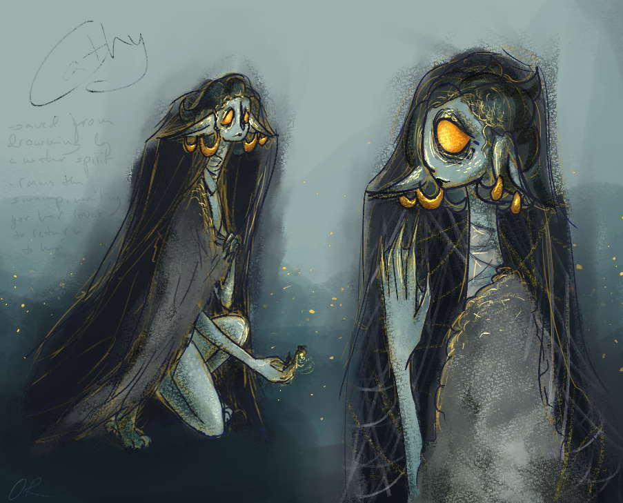
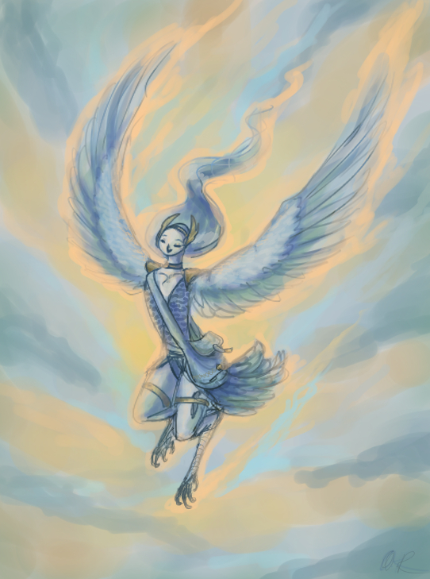
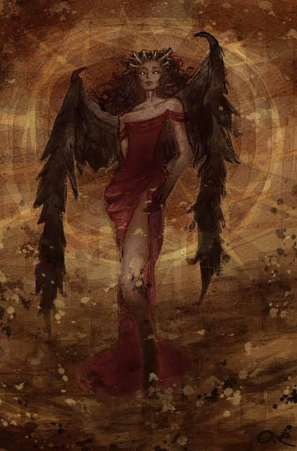
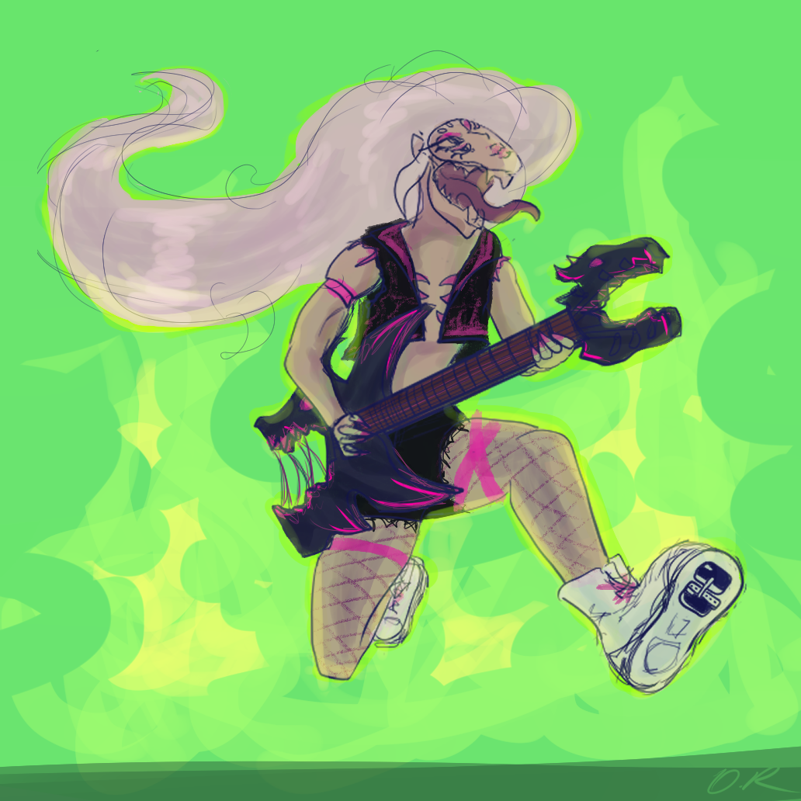

Gallery

This creature nearly drowned in the swamp when they were human, on her way to her wedding, if a lake spirit hadn't taken mercy on her. They fused, she survived, but was unrecognizable to her lover. She was left wondering the swamp, waiting for their lover to come back to them.
Water Creature

This creature brings news from all across the land. Made for the 2026 Chroma Corps challenge as a follow-along.
Winged Emissary

Eos has been here since the beginning of time. A demon? A goddess? No one knows for sure. She has the ability to bring forth creation and wonder, but also destruction and fear. For better or for worse, her powers have been executed if a blazing red sun is seen in the sky.
Eos - the Red Sun Goddess/Demoness

Jayden won over the Devourer and this is her guitar solo that won the heart of all. Created for the the 2026 Chroma Corps challenge as a follow-along.